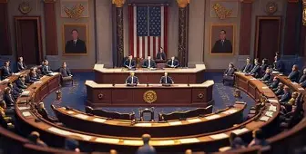
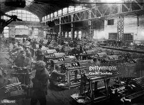

Welcome to the ideology quiz! This quiz will help you discover your political ideology based on your beliefs and values. Answer the following questions honestly to get the most accurate results.
1. How do you view the role of government in society?

2. What is your stance on economic policies?
3. How do you view social issues?
4. What is your perspective on foreign policy?

5. do you think who is responsible for the economic system?
6. what is your stance on free press?
7. what is your stance on free speech?
8. what do you think about monarchy?
9. what do you think about democracy?
10. Do you think who should be the government?